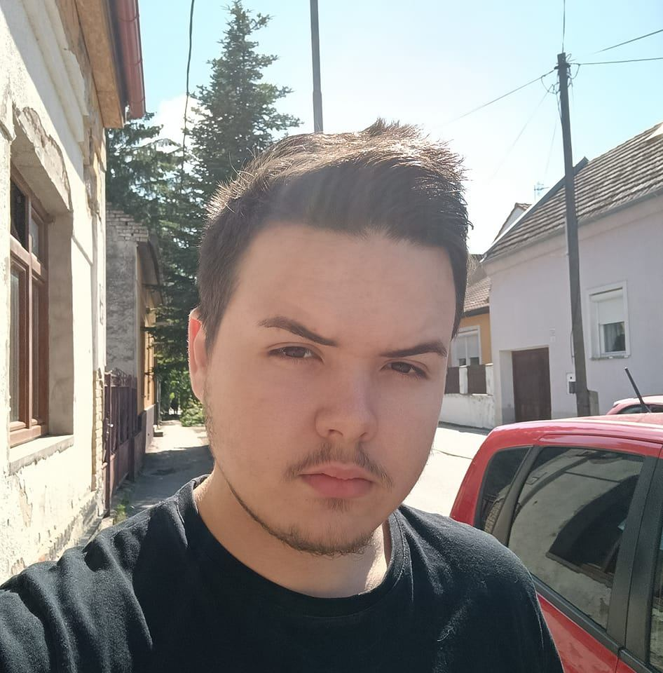

Mark Ipolyi - Oneletrajz
Osszesitett oneletrajz
Cél:
Olyan munkahelyet keresek, ahol kihasználhatom, és bővíthetem tudásomat és
jól érezhetem magam. Emellett fontos hogy ne minimálbéren legyek, hiszen
meg kell alapoznom a jövőmet.
Education:
Szakközépiskola - Jedlik Ányos Elektrotechnikai és Kereskedelmi
Középiskola Újvár, Szlovákia, Érettségi év: 2022
Munkatapasztalatok:
-
Pincér – Želiezovce Bowling – 1 év (hétvégente 2 nap, iskola mellett)
- Csomagoló – Želiezovce Mira Office (3x2 hónap nyaranként)
- Karbantartó – IKEA Malacky – többszöri egynapos munkák
- Bontó – IKEA Malacky
- Mezőgazdasági Munka – Budapest készgyep.hu
- Targoncás – Jober Veľký Meďer (Pozsonyi projekt) – 4 hónap
- Informatika – Oneflow Bratislava – 6 hónap
Hasznos képességek:
-
Alkalmazkodóképesség: Azóta dolgozom, hogy lehetőségeim adattak. 20 éves
koromra sokféle munkát végeztem
-
Kommunikáció: Jó és barátságos kommunikáció 3 nyelven: Magyar, angol,
szlovák; (Magyar – anyanyelv, Szlovák – B2, Angol - B2).
- Informatika az életem

Kontakt